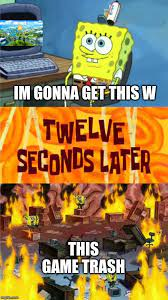
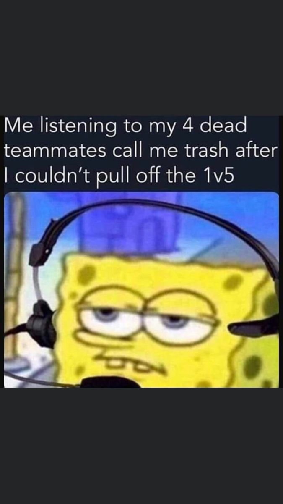
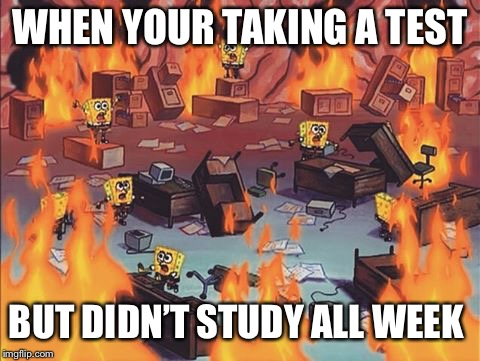
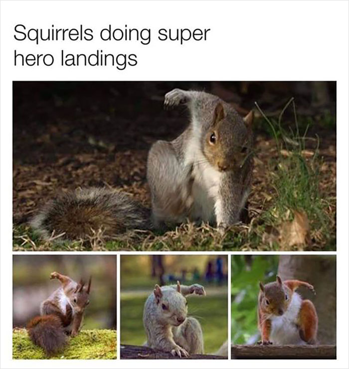

One of my hobbies is hiking, I love being outdoors in nature as well as swimming occansionally.
Secondly, I have picked up is reading, A couple of book that I have read so far are "Moutains of Madness"
by H.P lovecraft, and "Fahrenheit 451" by Ray Bradbury which I am actively reading now.
Another notable hobby I am interested in is 3D Graphic Design, I use blender and was
making a project almost everyday for a year, but truthfully I have let go of the hobby
due to school and life. The art holds a special place in my heart, and I do plan to
get back into 3D Graphic's but this time around I will be working on clothes designs.
Lastly I do binge Anime, Netflix, Youtube and play videogames since I was young.


Hobby Details
Hiking and Adventure💮
There is so many Hiking trails and amazing nature views to see around the world.
Some states I have traveled and explored are:
Atlanta GA, Dallas and Austin TX, Las Vegas NV,
Sacramento, Santa Barbara, Los Angeles, San Diego CA.
Reading💮
I really love all genres of reading but to name my most common usually are
Poetry, Graphic Novels like Manga, Horror, Self-Help, Adventure Fiction.
3D Graphics💮
I would model game charcters and put them in sets, even posting my work and gained a following.
I ended up leaving the community after losing motivations due to losing all my work,
that I put on a hard-drive, after school started back up and I continued life.
Recently I have seen a video of clothes design using a 3D engine similar to the one
I used and I was inspired to try again, for now my ideas are only sketches.
Visual Entertainment💮
There are tons of shows, animes, and movies that come out and I feel like I have watched majority of movies.
Animes that I am watching right now are One Piece, and Baki Hanma as for have watched animes,
it truly is alot around 100-200. I do have certain genres I take interest in like Horror, adventure, fantasy,
sci-fi, Comedy, Romance, and Slice of life. A artist I really enjoy is Satoshi Kon known for his
Psycological Thrillers that will hold you captivated in suspense and mystery.

